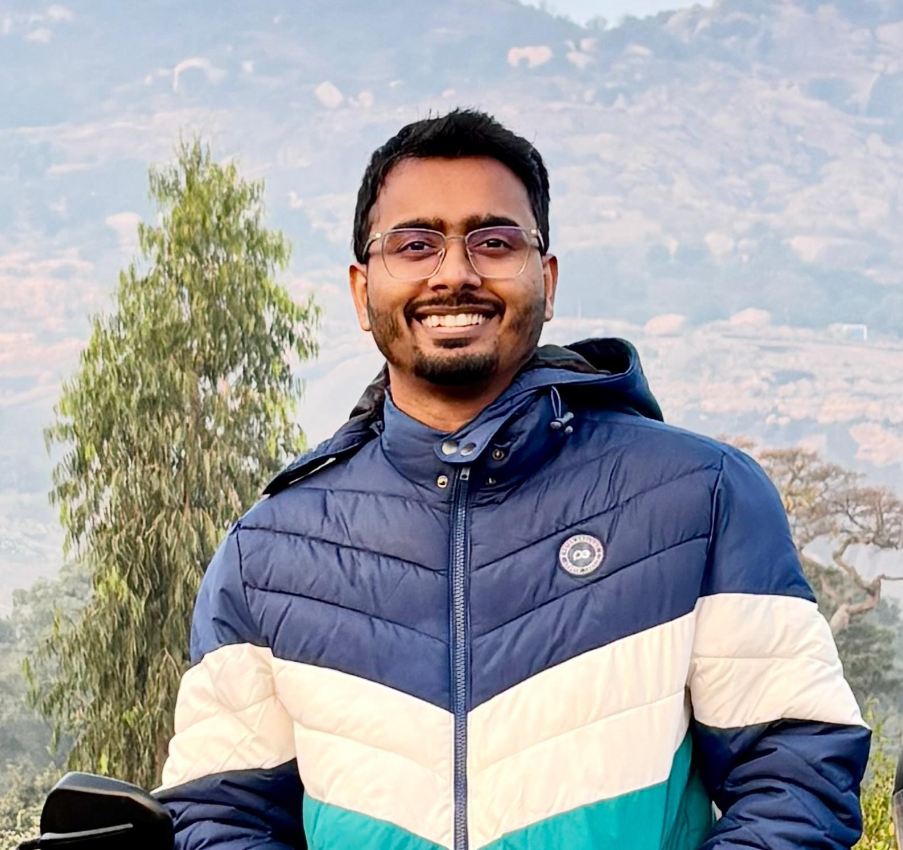

ASIC Verification Engineer · Bangalore, India
👋 Hello, I'm Rajesh — an ASIC verification engineer with 5+ years of experience building UVM testbenches, closing coverage, and finding the bugs that matter before a design reaches tapeout.
🎓 I hold an M.Tech in Microelectronics & VLSI Design from IIT Gandhinagar (CPI 8.82) and a B.Tech in Electronics from Tezpur University. My verification work spans video codec IPs — APV, VVC, H.265/264, and AV1 — along with high-speed protocols and SoC subsystems for Security, Clock & Reset, and Always-On blocks.
🔬 I specialize in UVM / SystemVerilog testbench development, constrained-random and formal coverage closure (JasperGold), and X-prop verification. I've uncovered multiple critical RTL and C-model bugs, and I've been exploring LLM-based stimulus generation to make coverage closure faster.
💡 Beyond the testbench, I enjoy mentoring new engineers, improving team automation, and the occasional RTL design and tapeout project.
A timeline of roles, milestones, and recognitions.
Where I focus and what I like working on.
| Degree | Institute | Score | Year |
|---|---|---|---|
| M.Tech, Microelectronics & VLSI Design | IIT Gandhinagar | 8.82 / 10 | 2019 – 2021 |
| B.Tech, Electronics & Communication | Tezpur University, Assam | 7.87 / 10 | 2014 – 2018 |
| Class XII | NSPS, Jamshedpur | 87% | 2012 – 2013 |
| Class X | NSPS, Jamshedpur | 8.6 / 10 | 2010 – 2011 |
AmazonLabs123 · Bangalore
Qualcomm Inc. · Bangalore
Marvell India Pvt Ltd · Bangalore
Selected work from IIT Gandhinagar, Tezpur University, and beyond.
RTL design of efficient serial compute circuits for in-memory computing, using the Neural-Cache architecture as a baseline.
Generated and optimized RTL for pre-trained ML models via hls4ml; functional verification in Vivado & Synopsys VCS.
RTL-to-GDS of a two-stage RISC processor with TMR/GDMR/GF radiation-hardened variants, plus 6T-SRAM array P&R.
Designed and integrated arbiter (round-robin), VC allocator, synchronous FIFO, route-compute, and crossbar in Verilog.
Lightweight C++ CNN in Caffe achieving up to 32.5 dB PSNR for an end-to-end super-resolution solution.
Texas Innovation Challenge 2016 — a BeagleBone Black phone with Braille keys driven by electromagnets.
Open to verification roles and collaborations.